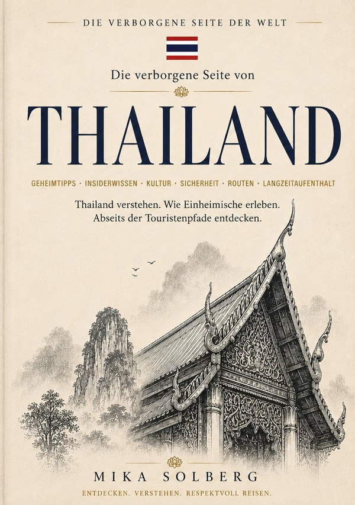

Reiseführer
Die verborgene Seite von Thailand
Reiseführer Thailand mit Geheimtipps
Reihe: Die verborgene Seite der Welt · Band 1
Von der Geschichte Ayutthayas bis zu den stillen Buchten von Koh Mak: Thailand jenseits der Touristenrouten. Mit Reiserouten sowie Budget-Tipps und Sparstrategien.
E-Book 12,99 €Taschenbuch 24,99 €
Erhältlich als E-Book & Taschenbuch
E-Bookbei epubli kaufenTaschenbuchbei epubli kaufenTaschenbuchbei Amazon kaufenTaschenbuchbei Hugendubel kaufen
E-Book: ISBN 978-3-565585-66-3 · Taschenbuch: ISBN 978-3-565585-65-6